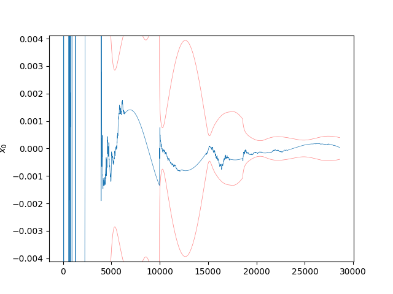
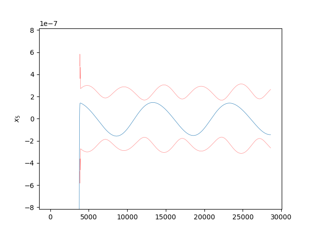
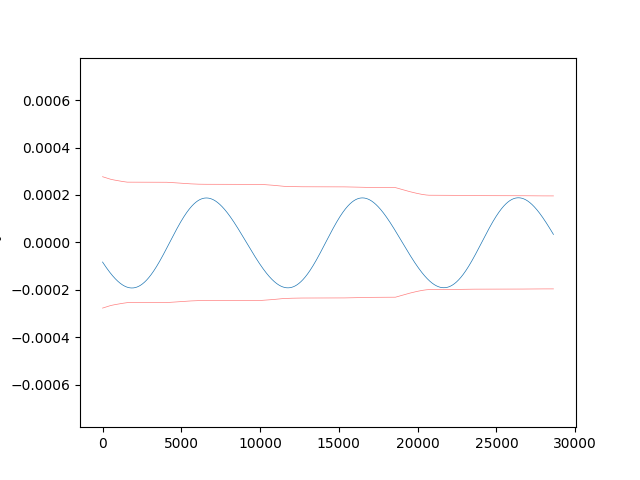

Note
Click here to download the full example code
Kalman Filter with Smoother Example
- 

- 
- 
Progress: 0%| | 0/2862 [00:00<?, ?it/s]
Progress: 0%| | 1/2862 [00:03<2:31:56, 3.19s/it]
Progress: 1%| | 25/2862 [00:03<04:27, 10.59it/s]
Progress: 2%|1 | 49/2862 [00:03<01:58, 23.78it/s]
Progress: 3%|2 | 73/2862 [00:03<01:09, 40.12it/s]
Progress: 3%|3 | 97/2862 [00:03<00:46, 59.45it/s]
Progress: 4%|4 | 122/2862 [00:03<00:33, 82.49it/s]
Progress: 5%|5 | 150/2862 [00:03<00:24, 111.40it/s]
Progress: 6%|6 | 179/2862 [00:03<00:18, 142.12it/s]
Progress: 7%|7 | 208/2862 [00:04<00:15, 170.55it/s]
Progress: 8%|8 | 235/2862 [00:04<00:13, 191.06it/s]
Progress: 9%|9 | 262/2862 [00:04<00:12, 205.10it/s]
Progress: 10%|# | 288/2862 [00:04<00:11, 215.79it/s]
Progress: 11%|# | 314/2862 [00:04<00:11, 216.22it/s]
Progress: 12%|#1 | 339/2862 [00:04<00:11, 224.23it/s]
Progress: 13%|#2 | 365/2862 [00:04<00:10, 231.50it/s]
Progress: 14%|#3 | 390/2862 [00:04<00:10, 236.61it/s]
Progress: 15%|#4 | 415/2862 [00:04<00:10, 236.38it/s]
Progress: 15%|#5 | 440/2862 [00:04<00:10, 225.85it/s]
Progress: 16%|#6 | 464/2862 [00:05<00:10, 228.02it/s]
Progress: 17%|#7 | 488/2862 [00:05<00:10, 228.55it/s]
Progress: 18%|#7 | 512/2862 [00:05<00:10, 229.70it/s]
Progress: 19%|#8 | 536/2862 [00:05<00:10, 230.08it/s]
Progress: 20%|#9 | 560/2862 [00:05<00:10, 229.35it/s]
Progress: 20%|## | 584/2862 [00:05<00:09, 229.86it/s]
Progress: 21%|##1 | 608/2862 [00:05<00:09, 230.97it/s]
Progress: 22%|##2 | 634/2862 [00:05<00:09, 238.51it/s]
Progress: 23%|##3 | 663/2862 [00:05<00:08, 252.60it/s]
Progress: 24%|##4 | 691/2862 [00:06<00:08, 260.40it/s]
Progress: 25%|##5 | 718/2862 [00:06<00:08, 260.76it/s]
Progress: 26%|##6 | 745/2862 [00:06<00:08, 256.14it/s]
Progress: 27%|##6 | 771/2862 [00:06<00:08, 253.41it/s]
Progress: 28%|##7 | 797/2862 [00:06<00:08, 254.61it/s]
Progress: 29%|##8 | 823/2862 [00:06<00:08, 252.64it/s]
Progress: 30%|##9 | 849/2862 [00:06<00:07, 254.18it/s]
Progress: 31%|### | 875/2862 [00:06<00:07, 254.71it/s]
Progress: 31%|###1 | 901/2862 [00:06<00:07, 255.44it/s]
Progress: 32%|###2 | 927/2862 [00:06<00:07, 255.68it/s]
Progress: 33%|###3 | 953/2862 [00:07<00:07, 256.75it/s]
Progress: 34%|###4 | 979/2862 [00:07<00:07, 255.96it/s]
Progress: 35%|###5 | 1005/2862 [00:07<00:07, 251.77it/s]
Progress: 36%|###6 | 1031/2862 [00:07<00:07, 246.65it/s]
Progress: 37%|###6 | 1056/2862 [00:07<00:07, 243.98it/s]
Progress: 38%|###7 | 1081/2862 [00:07<00:07, 243.03it/s]
Progress: 39%|###8 | 1106/2862 [00:07<00:07, 241.33it/s]
Progress: 40%|###9 | 1132/2862 [00:07<00:07, 245.13it/s]
Progress: 40%|#### | 1158/2862 [00:07<00:06, 248.60it/s]
Progress: 41%|####1 | 1184/2862 [00:07<00:06, 251.04it/s]
Progress: 42%|####2 | 1210/2862 [00:08<00:06, 248.31it/s]
Progress: 43%|####3 | 1235/2862 [00:08<00:06, 241.92it/s]
Progress: 44%|####4 | 1260/2862 [00:08<00:06, 242.61it/s]
Progress: 45%|####4 | 1285/2862 [00:08<00:06, 238.48it/s]
Progress: 46%|####5 | 1311/2862 [00:08<00:06, 243.48it/s]
Progress: 47%|####6 | 1338/2862 [00:08<00:06, 248.03it/s]
Progress: 48%|####7 | 1363/2862 [00:08<00:06, 247.20it/s]
Progress: 49%|####8 | 1389/2862 [00:08<00:05, 248.32it/s]
Progress: 49%|####9 | 1415/2862 [00:08<00:05, 249.74it/s]
Progress: 50%|##### | 1440/2862 [00:09<00:05, 249.70it/s]
Progress: 51%|#####1 | 1466/2862 [00:09<00:05, 249.96it/s]
Progress: 52%|#####2 | 1492/2862 [00:09<00:05, 245.99it/s]
Progress: 53%|#####3 | 1517/2862 [00:09<00:05, 240.20it/s]
Progress: 54%|#####3 | 1542/2862 [00:09<00:05, 233.67it/s]
Progress: 55%|#####4 | 1566/2862 [00:09<00:05, 222.05it/s]
Progress: 56%|#####5 | 1589/2862 [00:09<00:05, 215.50it/s]
Progress: 56%|#####6 | 1611/2862 [00:09<00:05, 213.26it/s]
Progress: 57%|#####7 | 1637/2862 [00:09<00:05, 224.55it/s]
Progress: 58%|#####8 | 1663/2862 [00:10<00:05, 233.75it/s]
Progress: 59%|#####9 | 1689/2862 [00:10<00:04, 240.15it/s]
Progress: 60%|#####9 | 1714/2862 [00:10<00:04, 239.10it/s]
Progress: 61%|###### | 1738/2862 [00:10<00:04, 238.30it/s]
Progress: 62%|######1 | 1763/2862 [00:10<00:04, 241.36it/s]
Progress: 63%|######2 | 1789/2862 [00:10<00:04, 244.27it/s]
Progress: 63%|######3 | 1815/2862 [00:10<00:04, 244.23it/s]
Progress: 64%|######4 | 1840/2862 [00:10<00:04, 237.06it/s]
Progress: 65%|######5 | 1864/2862 [00:10<00:04, 235.55it/s]
Progress: 66%|######5 | 1888/2862 [00:10<00:04, 226.35it/s]
Progress: 67%|######6 | 1911/2862 [00:11<00:04, 220.71it/s]
Progress: 68%|######7 | 1935/2862 [00:11<00:04, 224.36it/s]
Progress: 68%|######8 | 1959/2862 [00:11<00:03, 228.29it/s]
Progress: 69%|######9 | 1983/2862 [00:11<00:03, 229.78it/s]
Progress: 70%|####### | 2007/2862 [00:11<00:03, 231.42it/s]
Progress: 71%|####### | 2031/2862 [00:11<00:03, 233.21it/s]
Progress: 72%|#######1 | 2055/2862 [00:11<00:03, 233.91it/s]
Progress: 73%|#######2 | 2079/2862 [00:11<00:03, 235.14it/s]
Progress: 74%|#######3 | 2104/2862 [00:11<00:03, 237.77it/s]
Progress: 74%|#######4 | 2130/2862 [00:11<00:03, 243.41it/s]
Progress: 75%|#######5 | 2156/2862 [00:12<00:02, 245.89it/s]
Progress: 76%|#######6 | 2182/2862 [00:12<00:02, 248.52it/s]
Progress: 77%|#######7 | 2207/2862 [00:12<00:02, 246.10it/s]
Progress: 78%|#######7 | 2232/2862 [00:12<00:02, 241.24it/s]
Progress: 79%|#######8 | 2257/2862 [00:12<00:02, 238.59it/s]
Progress: 80%|#######9 | 2281/2862 [00:12<00:02, 237.55it/s]
Progress: 81%|######## | 2305/2862 [00:12<00:02, 235.67it/s]
Progress: 81%|########1 | 2329/2862 [00:12<00:02, 231.41it/s]
Progress: 82%|########2 | 2355/2862 [00:12<00:02, 237.42it/s]
Progress: 83%|########3 | 2379/2862 [00:13<00:02, 238.16it/s]
Progress: 84%|########3 | 2403/2862 [00:13<00:01, 238.55it/s]
Progress: 85%|########4 | 2429/2862 [00:13<00:01, 243.91it/s]
Progress: 86%|########5 | 2454/2862 [00:13<00:01, 245.66it/s]
Progress: 87%|########6 | 2480/2862 [00:13<00:01, 247.59it/s]
Progress: 88%|########7 | 2505/2862 [00:13<00:01, 245.22it/s]
Progress: 88%|########8 | 2531/2862 [00:13<00:01, 246.90it/s]
Progress: 89%|########9 | 2557/2862 [00:13<00:01, 248.01it/s]
Progress: 90%|######### | 2582/2862 [00:13<00:01, 247.03it/s]
Progress: 91%|#########1| 2607/2862 [00:13<00:01, 245.38it/s]
Progress: 92%|#########1| 2633/2862 [00:14<00:00, 249.09it/s]
Progress: 93%|#########2| 2659/2862 [00:14<00:00, 252.02it/s]
Progress: 94%|#########3| 2686/2862 [00:14<00:00, 254.63it/s]
Progress: 95%|#########4| 2712/2862 [00:14<00:00, 246.12it/s]
Progress: 96%|#########5| 2737/2862 [00:14<00:00, 241.01it/s]
Progress: 97%|#########6| 2762/2862 [00:14<00:00, 238.74it/s]
Progress: 97%|#########7| 2786/2862 [00:14<00:00, 237.17it/s]
Progress: 98%|#########8| 2810/2862 [00:14<00:00, 225.58it/s]
Progress: 99%|#########9| 2834/2862 [00:14<00:00, 227.88it/s]
Progress: 100%|#########9| 2860/2862 [00:15<00:00, 236.05it/s]
Progress: 100%|##########| 2862/2862 [00:15<00:00, 190.59it/s]
Time Elapsed: 15.01812744140625
Major Iteration: 0 ||dx_k|| = 0.010085
Time Elapsed: 5.273525953292847
/github/workspace/StatOD/visualizations.py:79: RuntimeWarning: invalid value encountered in sqrt
self.__plot_state_error(x_hat[:,i], x_true[:,i], np.sqrt(P[:,i,i]), labels[i])
7 8 9 10 11 12 13 14 15 16 17 18 19 20 21 22 23 24 25 26 27 28 29 30 31 32 33 34 35 36 37 38 39 40 41 42 43 44 45 46 47 48 49 50 51 52 53 54 55 56 57 58 59 60 61 62 63 64 65 66 67 68 69 70 71 72 73 74 75 76 77 78 79 80 81 82 83 84 85 86 87 88 89 90 91 92 93 94 95 96 97 98 99 100 101 102 103 104 105 106 107 108 109 110 111 112 113 114 115 116 117 118 119 120 121 122 123 124 125 126 127 128 129 130 131 132 133 134 | import os
import pickle
import sys
import time
import copy
import matplotlib.pyplot as plt
import numpy as np
from scipy.integrate import solve_ivp
import StatOD
from StatOD.constants import EarthParams
from StatOD.data import get_measurements
from StatOD.dynamics import dynamics, f_J2, get_Q, process_noise, f_J3
from StatOD.filters import FilterLogger, KalmanFilter, NonLinearBatchFilter, Smoother
from StatOD.measurements import h_rho_rhod, measurements
from StatOD.visualizations import *
def main():
ep = EarthParams()
cart_state = np.array([-3515.4903270335103, 8390.716310243395, 4127.627352553683,
-4.357676322178153, -3.3565791387645487, 3.111892927869902])
t, Y, X_stations_ECI = get_measurements("Data/Measurements/range_rangerate_w_J2_w_noise.data")
# Decrease scenario length
M_end = len(t) // 5
t = t[:M_end]
Y = Y[:M_end]
# Initialize state and filter parameters
dx0 = np.array([0.1, 0.0, 0.0, 1E-4, 0.0, 0.0])
x0 = cart_state + (dx0 / 10)
P_diag = np.array([1, 1, 1, 1E-3, 1E-3, 1E-3])**2
R_diag = np.array([1E-3, 1E-6])**2
P0 = np.diag(P_diag)
R0 = np.diag(R_diag)
t0 = 0.0
# Initialize Process Noise
Q0 = np.eye(3) * 1e-7 ** 2
Q_args = []
# Q_fcn = process_noise(x0, Q0, get_Q, Q_args, use_numba=False)
Q_fcn = None
# Initialize Dynamics and Measurements
f_args = np.array([ep.R, ep.mu, ep.J2])
f, dfdx = dynamics(x0, f_J2, f_args)
f_dict = {
"f": f,
"dfdx": dfdx,
"f_args": f_args,
"Q_fcn": Q_fcn,
"Q": Q0,
"Q_args": Q_args,
}
h_args = X_stations_ECI[0]
h, dhdx = measurements(x0, h_rho_rhod, h_args)
h_dict = {'h': h, 'dhdx': dhdx, 'h_args': h_args}
#########################
# Generate f/h_args_vec #
#########################
f_args_vec = np.full((len(t), len(f_args)), f_args)
h_args_vec = X_stations_ECI
R_vec = np.repeat(np.array([R0]), len(t), axis=0)
start_time = time.time()
logger = FilterLogger(len(x0), len(t))
filter = KalmanFilter(t0, x0, dx0, P0, f_dict, h_dict, logger=logger)
filter.run(t, Y[:,1:], R_vec, f_args_vec, h_args_vec)
print("Time Elapsed: " + str(time.time() - start_time))
################
# Run Smoother #
################
# NOTE: The Smoother accounts for process noise
# Run smoother on the CKF output
smoother = Smoother(filter.logger)
smoother.update()
############
# Run NLBF #
############
# NOTE: The NLBF cannot account for process noise
logger = FilterLogger(len(x0), len(t))
NLBFilter = NonLinearBatchFilter(t0, x0, dx0, P0, f_dict, h_dict, logger, iterations=1)
start_time = time.time()
NLBFilter.run(t, Y[:,1:], R_vec, f_args_vec, h_args_vec, tol=1E-7)
print("Time Elapsed: " + str(time.time() - start_time))
############
# Plotting #
############
package_dir = os.path.dirname(StatOD.__file__) + "/../"
with open(package_dir + 'Data/Trajectories/trajectory_J2.data', 'rb') as f:
traj_data = pickle.load(f)
x_truth = traj_data['X'][:M_end]
# CKF State Errors
vis = VisualizationBase(filter.logger)
vis.plot_state_errors(x_truth)
# Smoother State Errors
vis = VisualizationBase(smoother.logger)
vis.plot_state_errors(x_truth)
# NLB Filter State Errors
vis = VisualizationBase(NLBFilter.logger)
vis.plot_state_errors(x_truth)
plt.show()
if __name__ == "__main__":
main()
|
Total running time of the script: ( 0 minutes 25.651 seconds)